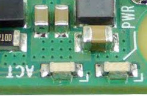
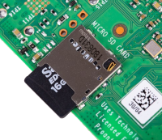

Objectifs pédagogiques
Les objectifs principaux de ce sujet de travaux pratiques sont d'exécuter et de comprendre :
- une procédure d'installation d'un serveur web associé à une base de donnée.
- la mise en œuvre d'une application web simple sur la base de cette architecture 3 niveaux.
Un objectif secondaire est de se familiariser avec la pratique des interfaces de commande de ligne.
Pour traiter ces exercices, il est recommandé d'avoir étudié les chapitres R2‑III et R2‑IV du cours. Des renvois aux principaux éléments de cours ou à des pages web d'information générale sont donnés au fur et à mesure des questions.
Mise en situation
Environnement et matériel
Les manipulations demandées sont à accomplir sur un réseau local utilisant la pile de protocole TCP/IP et disposant de tous les services attendus : passerelle vers l'Internet, serveur DHCP, résolveur DNS.
La présence d'un serveur proxy comme ceux mis en œuvre par les DSI académiques de l'Éducation nationale peut sérieusement compliquer certaines procédures d'installation.
On requiert le matériel listé ci‑dessous :
- pour jouer le rôle de client web, un poste de travail – de préférence un PC Linux, sinon un PC Windows avec service
sshactivé dans le terminal Powershell (cela évite de recourir à un logiciel tiers comme PuTTY) ; - pour jouer le rôle de serveur web et de base de données, un nano‑ordinateur de type Raspberry Pi 4 (ou éventuellement 3B), son bloc d'alimentation au secteur et une carte microSD de 8 Go minimum pour installer son système d'exploitation et ses logiciels.
Ces deux machines doivent être l'une et l'autre raccordées au réseau local – typiquement, via un switch comme sur la figure ci‑dessus – et se voir attribuer chacune une adresse IP sur le même segment pour pouvoir communiquer – ce qui est assuré avec la présence d'un serveur DHCP sur le réseau local et la configuration appropriée des machines (cf. chap R2‑II ). Évidemment, il faut connaître la plage d'adresses IP dynamiques paramétrée par l'administrateur du réseau.
Pour des questions pédagogiques, pour contrôler la carte Raspberry Pi, plutôt que de lui raccorder spécifiquement un écran et un clavier, on fait le choix d'une connexion ssh via un terminal de commandes en ligne sur le poste de travail. C'est en effet la solution usuellement adoptée dans un contexte professionnel, et tout particulièrement dans le domaine du cloud computing.
Travail demandé
Effectuer toutes les manipulations méticuleusement dans l'ordre indiqué. Saisir les commandes en ligne par copier‑coller des commandes pour éviter les fautes de frappe et d'inattention. Dans une perspective de consolidation des connaissances, il est recommandé de bien comprendre le rôle de chaque commande, en consultant éventuellement les pages web données en référence.
Répondre aux explications demandées sur un cahier ou dans un fichier.
I – Travail préparatoire
- Préparation du poste de travail
- Pour le gravage de la clef USB bootable d'une carte Raspberry Pi, quel que soit le système d'exploitation du poste de travail, il est recommandé d'employer l'utilitaire dédié Raspberry Pi Imager.
- Sur le poste de travail, vérifier qu'un logiciel de scan réseau est installé (cf. chap. R1‑II ).
- Préparation du système d'exploitation du serveur
- Pour le futur serveur, télécharger l'image du système d'exploitation Raspberry Pi OS dans sa version 64 bits « lite » (without desktop) la plus récente . Il s'agit d'un fichier d'archive
.xz. - Introduire la carte microSD dans un lecteur USB et la brancher au poste de travail. Si elle n'est pas vierge, il est inutile de la formater ; cette opération sera automatiquement effectuée avant le gravage.
- Pour le système d'exploitation, choisir l'option « utiliser une image personnalisée » et sélectionner celle téléchargée à la question 2.a.
- Pour le support de stockage, sélectionner la carte MicroSD branchée sur le poste – attention à ne pas confondre avec une clef USB personnelle qui serait éventuellement montée sur le poste, le risque étant d'écraser tout son contenu.
- Cliquer alors sur le bouton de paramétrage ⚙ et cocher les options suivante :
-
Set hostnameen modifiant le nom proposé par par défaut : saisirrpiX où X est un numéro indiqué par l'enseignant, différent pour chaque carte ; -
Enable SSHavec l'optionuse password authentication; -
Set username and passwordavec le nom d'utilisateurpipar défaut et le mot de passe indiqué par l'enseignant ; -
Set locale settingsavec la zone horaire locale (Paris) et le clavierfr. -
boot, qui constitue le secteur de démarrage du système ; -
rootfs, qui constitue le racine du système de fichiers. - Mise en service et paramétrage du serveur
- Introduire la carte microSD dans le bon sens dans le logement sous la carte Raspberry Pi (cf. la photo ci‑contre) puis raccorder cette dernière au réseau local via un câble Ethernet avant sa mise sous tension. 
- Scanner le réseau local sur toute la plage d'adresses IP dynamiques. Repérer l'adresse IP de la carte en correspondance avec son adresse MAC ou son hostname.
- Sur le poste de travail, ouvrir un terminal de commandes en ligne et se connecter à la carte Raspberry Pi via la commande :
- À l'aide de la commande
date, vérifier si le système est réglé sur la bonne zone horaire (cf. chap. R2‑VI ) et que l'heure est synchrone avec celle affichée par le poste de travail. - À l'aide de la commande
locale, vérifier si les valeurs des variables d'environnement du système (notammentLANGetLANGUAGE) sont cohérentes avec les paramètres régionaux W de la France. - Modifier le fichier de sélection des locales :
- Saisir la commande
sudo locale-genpour générer la locale sélectionnéefr.FR-UTF-8. - Modifier le fichier de configuration des paramètres régionaux de langage :
- Pour rendre ces modifications effectives, exécuter la commande :
- Mettre à jour le système par la séquence de commandes suivantes :
- Sur le poste de travail, à l'aide d'un navigateur, sélectionner un site de dépôt sur la page web suivante (copier son URL dans le presse‑papier).
- Sur la carte Raspberry Pi, coller cet URL à la place de ceux codés dans les fichiers suivants (à éditer à l'aide de la commande
sudo nano) : -
/etc/apt/sources.list -
/etc/apt/sources.list.d/raspi.list - Installation du logiciel serveur HTTP Apache
- En connexion
sshavec la carte Raspberry Pi, installer le logiciel serveur HTTP Apache2 (cf. chap. R2‑IV ) : - Spécifier le nom du serveur en éditant le fichier de configuration (avec activation de la numérotation des lignes de l'éditeur
nano) : - Relancer le service
apache2(une authentification de l'utilisateur par mot de passe est requise) puis vérifier ensuite qu'il est bien actif en tâche de fond : - Donner à l'utilisateur
pila propriété du répertoire/var/wwwqui constitue pour l'applicationapache2la racine des fichiers de pages web qu'elle peut servir : - Créer un répertoire
examplePHPet y charger la page web dynamiquechangeBackground.phpdonnée à titre d'exemple académique dans le cours (cf. chap. R2‑IV ) : - Installation du langage de backend PHP
- Toujours en connexion
sshavec la carte Raspberry Pi, installer les paquets du langage php (cf. chap. R2‑IV ) dans sa version stable (7.4) sélectionnée sur le dépôt Raspberry Pi, ainsi que les paquets communs partagés par toutes les versions : - Installer quelques modules d'extension supplémentaires usuellement utilisées pour le développement web :
- Après ces installation, on peut vérifier la liste des modules d'extension installés par la commande
php -m. - Dans le navigateur du poste de travail, on peut maintenant recharger la page web
changeBackground.phpouverte à la question 1.e et constater qu'elle fonctionne comme prévu. Si tel n'est pas le cas, vider le cache du navigateur pour cette entrée (avec Firefox, utiliser la commandeOublier ce sitedepuis l'historique de navigation, accessible dans le menu principal). - Installation du SGBDR MariaDB
- Toujours en connexion
sshavec la carte Raspberry Pi, installer les paquets du SGBDR MariaDB (cf. chap. R2‑IV ) dans sa version stable sélectionnée sur le dépôt Raspberry Pi : - Paramétrer la sécurité du SGBDR via la commande :
- adopter le même mot de passe pour l'utilisateur
rootque celui depipour la carte Raspberry Pi ; - ne pas recourir à l'authentification par
unix_socket(puisque l'accès est déjà sécurisé par mot de passe) ; - ne pas changer le mot de passe de l'utilisateur
root; - supprimer l'accès aux utilisateurs anonymes ;
- supprimer la possibilité d'accès distant pour l'utilisateur
root; - supprimer la base de donnée de test et son accès ;
- recharger la table des privilèges maintenant.
- Exécuter MariaDB (logiciel identifié par la commande
mysql) en tant qu'utilisateurrootet avec saisie de mot de passe : - Créer un répertoire
example3tieret y charger les fichiers source d'un exemple d'application 3‑tiers proposé dans le cours (cf. chap. R2‑IV ) : - puis, ouvrir la page web sur le poste de travail via l'URL :
http://adresse IP/example3tier/index.php
mais ne pas tester son fonctionnement pour le moment (cela produirait une erreur de connexion puisqu'aucune base de donnée n'a encore été créée). - Toujours en connexion
sshavec la carte Raspberry Pi, consulter le contenu du fichier sourcetableCreation.sqlqui va servir à créer la base de donnée nécessaire :cat tableCreation.sqlLancer MariaDB en tant qu'utilisateurpiavec saisie de mot de passe :sudo mysql -u pi -p
puis exécuter le fichier source de création de la base de donnéesuserPrefet de la tablefavoriteColors:source tableCreation.sql
En exécutant la commande SQL suivante, vérifier que la base de donnéesuserPrefest bien créée :SHOW DATABASES;
Vérifier ensuite que la tablefavoriteColorsexiste, puis détailler sa structure :SHOW TABLES; DESCRIBE `favoriteColors`;
- Sur le poste de travail, dans le navigateur, recharger la page web
index.phppuis tester son fonctionnement en saisissant par exemple la couleur nommémediumyellowavec les valeurs(255, 255, 127)comme code RGB. Cliquer sur le boutonRecordpour valider la saisie.Sur la carte Raspberry Pi, toujours dans l'environnement d'exécution de MariaDB, lister le contenu de la tablefavoriteColorsgrâce à la commande SQL :SELECT * FROM `favoriteColors`;
et constater qu'on y trouve bien la couleurmediumyellowenregistrée via la page web. Effacer alors cet enregistrement avec la commande SQL :DELETE FROM `favoriteColors` WHERE `colorName`="mediumyellow";
et vérifier qu'elle disparaît de l'affichage sur le navigateur en rechargeant la page web.Insérer à nouveau cette couleur par la commande SQL :INSERT INTO `favoriteColors` (colorName, redCode, greenCode, blueCode) VALUES ("mediumyellow", 255, 255, 127);et vérifier qu'elle ré‑apparaît dans la fenêtre du navigateur en rechargeant la page web.Pour finir, modifier la composante bleu du code RGB de la couleurmediumyellowvia la commande SQL :UPDATE `favoriteColors` SET `blueCode` = 128 WHERE `colorName`="mediumyellow";
et vérifier que cette modification est effective dans la fenêtre du navigateur en rechargeant la page web.Quitter MariaDB avec la commandequit. Faire alors une recherche dans le fichier sourceaddColor.phppour y retrouver le codage de la commandeINSERTen langage php :cat addColor.php | grep "INSERT"
- Installation de l'interface web phpMyAdmin
- Installer les paquets de l'interface web phpMyAdmin d'administration d'une base de donnée de type mySQL (cf. chap. R2‑IV ) dans sa version stable sélectionnée sur le dépôt Raspberry Pi :
- choisir
apache2comme serveur web à configurer ; - valider le choix de configurer la base de donnée avec
dbconfig-common; - saisir le même mot de passe qu'avec MariaDB pour l'accès à phpMyAdmin.
- Sur le poste de travail, dans un navigateur, ouvrir la page web de connexion à phpMyAdmin via l'URL :
http://adresse IP/phpmyadmin
et se connecter avec l'identifiantpi(et non pasroot) et le mot de passe utilisé depuis le début. Puis : - s'il est masqué, afficher le panneau navigation en cliquant sur le bouton en haut à gauche de la page ;
- dans ce panneau, retrouver la base de donnée
userPrefet cliquer sur son bouton «+» pour visualiser la liste des tables qu'elle contient ; - y retrouver la table
favoriteColorset cliquer sur son bouton «+» pour visualiser la liste de ses colonnes ; puis cliquer sur le nom de la table – qui est un hyperlien – pour afficher la page qui permet de manipuler son contenu ; - Avec les fonctionnalités de la page web dynamique :
http://adresse IP/example3tier/index.php
ajouter de nouvelles couleurs et constater qu'elles apparaîssent dans la tablefavoriteColorsen rafraichissant la page ; - dans l'interface phpMyAdmin, expérimenter les différentes possibilités de modifier les données de la table : ajouter des lignes, modifier une ligne, supprimer une ligne, etc.

sudo apt install phpmyadmin -y
Dans l'interface semi‑graphique, répondre méthodiquement aux questions comme indiqué ci‑dessous :puis finaliser la configuration de l'accès à phpMyAdmin :sudo ln -s /etc/phpmyadmin/apache.conf /etc/apache2/conf-available/phpmyadmin.conf sudo a2enconf phpmyadmin && systemctl reload apache2
et enfin, se déconnecter de phpMyAdmin en cliquant sur le 2e bouton situé sous le logo dans le panneau de navigation. - Sur le poste de travail, dans le navigateur, recharger la page web
.deb (paquets Debian) via le lien suivant . L'installation s'effectue en double‑cliquant sur ce fichier.

.deb (paquets Debian) sur la page de téléchargement du site de l'application puis double‑cliquer sur le fichier obtenu pour lancer l'installation. Fetchers… du menu Outils, ajouter les colonnes Constructeur MAC et Adresse Mac dans fenêtre d'affichage (cf. la capture d'écran ci‑dessous). Password. Enable telemetry et sauvegarder ces paramétrages en cliquant sur le bouton Save. Écrire pour démarrer le gravage l'image du système sur la carte MicroSD. boot apparaît sur le bureau). -

ssh pi@adresse IP
pi paramétré lors de l'opération de gravage (cf. question 2.b). ssh. passwd, changer le mot de passe en adoptant celui indiqué par l'enseignant. Avec l'identifiant d'utilisateur associé, le noter dans un fichier pour le retrouver en cas d'oubli ultérieur. sudo timedatectl set-timezone Europe/Paris && sudo timedatectl set-ntp True
date, que le système est bien réglé sur l'heure locale, à savoir la zone horaire CET – Central European Time – ou CEST – Central European Summer Time. fr.FR-UTF-8 en suivant la procédure ci‑dessous.
sudo nano /etc/locale.gen
# en début de ligne) en_GB.UTF-8 UTF-8 et en décommentant fr_FR.UTF-8 UTF-8. Taper Ctrl-S (save) et Ctrl-X (exit).
sudo nano /etc/default/locale
LANG=fr_FR.UTF-8 LANGUAGE=fr_FR.UTF-8
Ctrl-S) et quitter (Ctrl-X).
source /etc/default/locale
locale, vérifier que les paramètres régionaux sont conformes à la localisation du système. sudo reboot puis renouveler la connexion ssh (avec le nouveau mot de passe) et re‑vérifier les paramètres régionaux.
sudo apt update
sudo apt full-upgrade -y
sudo apt autoremove sudo reboot
ssh. Si la commande de mise à jour du système échoue au motif que le serveur des paquets est indisponible (typiquement, avec une erreur 503), cela peut être dû au serveur proxy académique.
Pour y remédier, une solution peut consister à changer de site de dépôt, en suivant la procédure ci‑dessous.
Recommencer alors la procédure de mise à jour (update, upgrade et reboot) décrite supra .
II – Installation et test d'un serveur web

sudo apt install apache2 -y
sudo nano -l /etc/apache2/apache2.conf
ServerName snirXwebserver
X est un numéro spécifique indiqué par l'enseignant, différent pour chaque carte sur le réseau (le même qu'à la question 1.b –). systemctl restart apache2 && systemctl status apache2
http://adresse IP
sudo chown -R pi:pi /var/www
ls -l /var/www
cd /var/www/html && mkdir examplePHP && cd examplePHP/ wget http://lycee-ferry-versailles.fr/snir/moduleR/prog/R2tp2_serveurs/changeBackground.txt mv changeBackground.txt changeBackground.php
http://adresse IP/examplePHP/changeBackground.php
et constater qu'elle est dysfonctionnelle. Proposer une explication mais ne pas fermer cet onglet (il sera réutilisé ultérieurement).

sudo apt install php php-common -y
sudo apt install php7.4-mysql php7.4-curl php7.4-gd php7.4-intl php7.4-mbstring php7.4-xml php7.4-zip php7.4-fpm -y
fpm W (fastGCI process manager) n'étant pas activée par défaut, il faut le faire « manuellement » via la séquence de commandes suivantes : sudo a2enmod proxy_fcgi setenvif && sudo a2enconf php7.4-fpm && sudo a2dismod php7.4
apache via la commande :
systemctl restart apache2
nano /var/www/html/info.php
<?php phpinfo(); ?>. Après avoir sauvegardé ce fichier, il suffit d'ouvrir la page web sur le poste de travail via l'URL : http://adresse IP/info.php
pour y lire toutes les caractéristiques techniques de l'environnement d'exécution de php.

sudo apt install mariadb-server -y
sudo mysql_secure_installation
sudo mysql -u root -p
pi avec tous les droits sur toutes les bases de données, et avec le même mot de passe que root, à modifier dans la commande ci‑dessous :
GRANT ALL PRIVILEGES ON *.* TO 'pi'@'localhost' IDENTIFIED BY 'mot de passe' WITH GRANT OPTION;
quit. cd /var/www/html && mkdir example3tier && cd example3tier/ wget -r --no-parent -nH -l1 --cut-dirs=6 --reject="index.html*" --reject="example3tier*" http://lycee-ferry-versailles.fr/snir/moduleR/prog/R2tp2_serveurs/example3tier for f in *.txt; do mv -- "$f" "${f%.txt}.php"; done
dbConnect.php, en activant la numérotation des lignes de l'éditeur nano : sudo nano -l dbConnect.php
$dbpasswd le mot de passe de l'utilisateur pi. Sauvegarder (Crtl-S) et quitter (Ctrl-X).